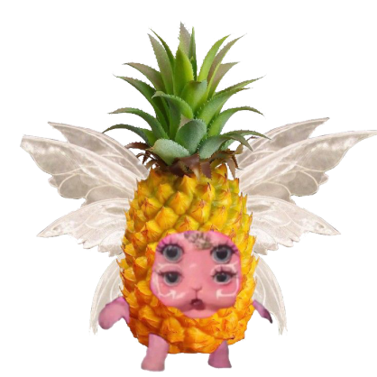

"Cry Baby" (2015): Este álbum conceitual explora a história fictícia de uma personagem chamada Cry Baby, com faixas que abordam temas como a infância problemática, o crescimento, o relacionamento com os pais e questões
"K-12" (2019): "K-12" é acompanhado de um filme musical homônimo dirigido por Melanie Martinez. O álbum e o filme juntos continuam a história de Cry Baby enquanto ela enfrenta desafios no sistema educacional. As músicas abordam questões como conformidade social, sexualidade, autoaceitação e outros temas sociais relevantes.
Melanie Martinez é conhecida por sua abordagem visual e artística única em suas músicas e vídeos, que muitas vezes têm um toque sombrio e surreal. É importante verificar se ela lançou novos álbuns ou projetos desde a minha última atualização, pois pode haver mais material disponível agora.
